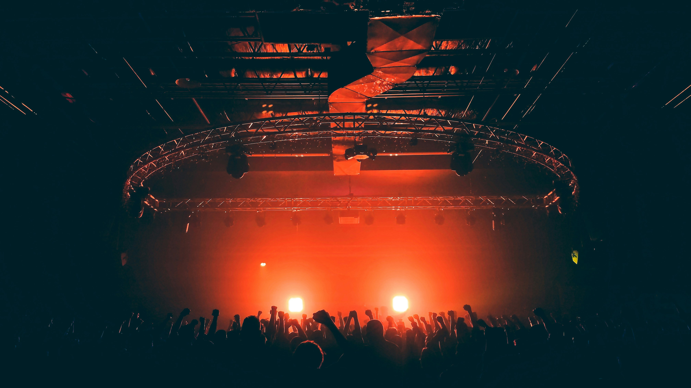
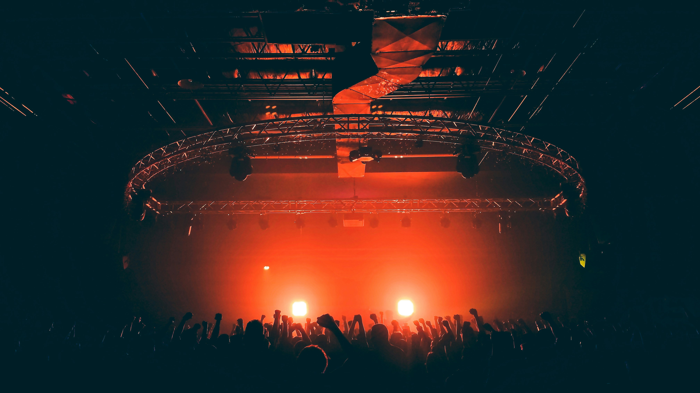

The Artificial Tears World Tour
BILEE ALISHI brought her Artificial Tears World Tour to a stunning close in Seoul last weekend, concluding a transcendent, system-melting, 16-city journey across the glitchscape of modern pop. Over 280,000 Crashies tuned into her synthetic sorrow, attending shows from Tokyo to Berlin, LA to Chengdu — where every stage became a temporary cloud server of shared digital grief. The tour featured a setlist built for collapse, holographic visuals, and intermittent AI malfunctions that blurred the line between art and error. The run included surprise cameos from Arca in Berlin, Rei Ami in Seoul, and a haunting duophonic duet with her corrupted alt-identity, BILLY AIRESH, in Los Angeles. Visual director Kai Yuan documented the entire tour, capturing behind-the-scenes stills of boot cycles, backstage reboots, and moments where synthetic tears almost seemed real.
 
